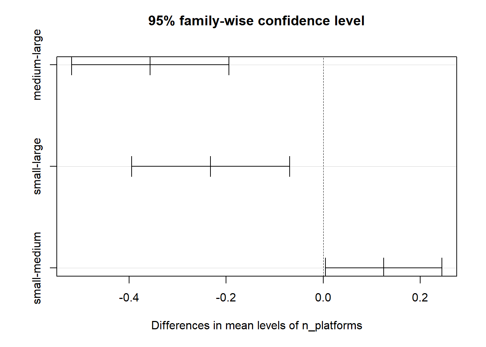

Final Report
11/23/2020
Motivation
Initial Questions
For games run on consoles developed by Nintendo, Sony and Microsoft, we want to know separately:
How does the sales of games change over time?
What is the most popular/profitable game genre on each companies’ consoles?
Is there an association between critic scores and game sales? In which direction?
Does the number of consoles the games are released on influence their sales?
Data Collection
Exploratory Analyses
Question 1
games_df = read_csv("./data/games.csv")
totalsale = games_df %>%
group_by(release_year) %>%
summarize(
totalsale = sum(total_sale)
) %>%
drop_na() %>%
ggplot(aes(x = release_year, y = totalsale)) +
geom_col() +
labs(x = "Year", y = "Total Sale (million USD)")
totalcount = games_df %>%
group_by(release_year) %>%
summarize(
count = n()
) %>%
drop_na() %>%
ggplot(aes(x = release_year, y = count)) +
geom_col() +
labs(x = "Year", y = "Number of Games")
totalsale + totalcountQuestion 2
games_df %>%
ggplot(aes(x = genre, y = total_sale, fill = console_developer)) +
geom_bar(stat = "identity", position = "stack") +
theme(axis.text.x = element_text(angle = 90, vjust = 0.5, hjust = 1)) +
labs(x = "Genre", y = "Total Sale (million USD)", fill = "Console Developer")
Question 3
games_df %>%
filter(total_sale < 5) %>%
ggplot(aes(x = critic_score, y = total_sale, color = console_developer)) +
geom_point(alpha = 0.2) +
geom_smooth(method = 'lm', se = F) +
labs(x = "Critic Score", y = "Total Sale (million USD)", color = "Console Developer")
Question 4
games_df %>%
mutate(n_platforms = as.factor(n_platforms)) %>%
ggplot(aes(x = n_platforms, y = total_sale, fill = console_developer)) +
geom_bar(stat = "identity", position = "stack") +
labs(x = "Number of Platforms", y = "Total Sale (million USD)", fill = "Console Developer")
Anova Analysis
games_df = games_df %>%
mutate(
genre =
case_when(
genre %in% c('action','action_adventure',"adventure", "fighting") ~ 'Action',
genre %in% c('racing','sports') ~ 'Competition',
genre %in% c('role_playing', 'simulation') ~ 'Experience',
genre %in% c('strategy','puzzle') ~ 'Intelligence',
genre %in% c('platform', 'shooting')~ 'Agility',
genre == 'miscellaneous' ~ "Miscellaneous")
) %>%
mutate(
n_platforms =
case_when(n_platforms == '1' ~ 'small',
n_platforms >= '2' & n_platforms <= '3' ~ 'medium',
n_platforms >= '4' ~ 'large'),
n_platforms = as.factor(n_platforms)
) %>%
dplyr::select(title:genre,critic_score, total_sale)By Analysis of Variance (ANOVA) we can conduct comparisons among groups of our interested categorical variables : genre and n_platforms.In the test of genre, we want to answer the question: Whether there are true differences in games sales among different genres?
1. One-way ANOVA: Total_sale ~ genre
aov_mod_1 = aov(total_sale ~ genre, data = games_df)broom::tidy(aov_mod_1)## # A tibble: 2 x 6
## term df sumsq meansq statistic p.value
## <chr> <dbl> <dbl> <dbl> <dbl> <dbl>
## 1 genre 5 208. 41.5 10.3 6.76e-10
## 2 Residuals 7334 29440. 4.01 NA NAmulti_comp_1 = TukeyHSD(aov_mod_1)
plot(multi_comp_1)
With p.value < 0.001, we conclude that at least two of the genres have different average total_sales. Then Tukey’s method was performed to make pairwise comparisons. 7 of 15 comparisons (eg. Agility vs Competition) have significant differences in mean of total_sale.
2. ANOVA with interaction: Total_sale ~ console_developer * genre
aov_mod_2 = aov(total_sale ~ console_developer * genre, data = games_df)broom::tidy(aov_mod_2)## # A tibble: 4 x 6
## term df sumsq meansq statistic p.value
## <chr> <dbl> <dbl> <dbl> <dbl> <dbl>
## 1 console_developer 2 23.8 11.9 2.99 5.04e- 2
## 2 genre 5 213. 42.6 10.7 2.91e-10
## 3 console_developer:genre 10 251. 25.1 6.30 1.08e- 9
## 4 Residuals 7322 29159. 3.98 NA NAmulti_comp_2 = TukeyHSD(aov_mod_2)
ori_df =
broom::tidy(multi_comp_2) %>%
filter(term == 'console_developer:genre') %>%
na.omit()
multi_df =
ori_df %>%
filter(adj.p.value < 0.05)With p.value of the interaction term = 1.08e-9 < 0.001, we conclude that at least two of the interaction combinations have different average total_sales.From Tukey’s multiple comparisons we get that there are 36 significant different combinations among 153 combinations of console_developer and genre.
3. Conclusion:
Anova tests above provide us evidence that indicate there are true differences in games sales among different groups of genre. When the console_developer changes, significant differences exist in subgroups as well. Thus it’s reasonable to include the interaction term console_developer : genre in the linear regression model.
Following similar procedures, we also conclude that significant differences exist in groups of n_platform (criteria of grouping: 1 ~ small, 2-3 ~ medium, 4-9 ~ large) and subgroups considering interaction with console_developer. Therefore we include the interaction term console_developer : n_platform in the linear regression model
Linear Regression
1. Build models:
Model 1: total_sale ~ console_developer * genre + console_developer * n_platforms.
Model 2: total_sale ~ console_developer * genre + console_developer * n_platforms + console_developer * critic_score
Model 3: total_sale ~ console_developer * genre + console_developer * critic_score
Model 4: total_sale ~ console_developer * n_platforms + console_developer * critic_score
We set the cutoff value at 5(million dollars). Model 2 contains interaction between console_developer and all interested predictors (genre, n_platform, critic_score) while Model 1,3,4 contain interaction between console_developer and two of interested predictors.
2. Cross validation:
3. Diagnosis and interpretation
In the selected model, we used Residuals vs Fitted values plot to detect unequal error variance (heteroscedasticity) and outliers.
regression_df =
games_df %>%
filter(total_sale < 5)
lm2 = lm(total_sale ~ console_developer*genre + console_developer*n_platforms + console_developer*critic_score, data = regression_df)
regression_df %>%
add_predictions(lm2) %>%
add_residuals(lm2) %>%
ggplot(aes(x = pred, y = resid))+
geom_point(alpha = 0.3)+
geom_smooth(method = 'lm', color = 'red')+
labs(x = 'fitted values of total_sales', y = 'model residuals', title = 'Residuals vs fitted values')## `geom_smooth()` using formula 'y ~ x'
As shown in the graph, there are many outliers with residuals > 3. Although the mean of residual values is close to 0 and residuals have a horizontal relationship with fitted value, the distribution of residual values is skewed. This plot indicates that our model does not have ideally distributed residuals. make jeff’s table
coe_df = broom::tidy(lm2)
coe_df1 = coe_df[-c(2:11),] %>%
select(term, estimate, p.value) %>%
mutate(term = str_replace(term, "^console_developerNintendo:", "Nintendo: "),
term = str_replace(term, "^console_developerSony:", "Sony: "),
) %>%
knitr::kable(digits = 3)
coe_df1| term | estimate | p.value |
|---|---|---|
| (Intercept) | -0.835 | 0.000 |
| Nintendo: genreAgility | -0.102 | 0.110 |
| Sony: genreAgility | -0.071 | 0.239 |
| Nintendo: genreCompetition | -0.025 | 0.683 |
| Sony: genreCompetition | 0.054 | 0.321 |
| Nintendo: genreExperience | 0.067 | 0.393 |
| Sony: genreExperience | -0.249 | 0.001 |
| Nintendo: genreIntelligence | 0.129 | 0.256 |
| Sony: genreIntelligence | -0.205 | 0.089 |
| Nintendo: genreMiscellaneous | 0.350 | 0.002 |
| Sony: genreMiscellaneous | -0.204 | 0.062 |
| Nintendo: n_platformsmedium | 0.210 | 0.001 |
| Sony: n_platformsmedium | -0.002 | 0.979 |
| Nintendo: n_platformssmall | 0.286 | 0.000 |
| Sony: n_platformssmall | -0.140 | 0.046 |
| Nintendo: critic_score | -0.108 | 0.000 |
| Sony: critic_score | 0.052 | 0.001 |
We compare coefficients of interaction terms between console_developer and genre/n_platforms/critic_score in the first table.
Interpretation:
coe_df = broom::tidy(lm2)
coe_df2 = coe_df[c(1:11),] %>%
select(term, estimate, p.value) %>%
knitr::kable(digits = 3)
coe_df2| term | estimate | p.value |
|---|---|---|
| (Intercept) | -0.835 | 0.000 |
| console_developerNintendo | 0.488 | 0.000 |
| console_developerSony | -0.129 | 0.321 |
| genreAgility | 0.153 | 0.001 |
| genreCompetition | -0.031 | 0.464 |
| genreExperience | 0.058 | 0.360 |
| genreIntelligence | -0.224 | 0.023 |
| genreMiscellaneous | 0.205 | 0.022 |
| n_platformsmedium | -0.306 | 0.000 |
| n_platformssmall | -0.275 | 0.000 |
| critic_score | 0.230 | 0.000 |
In the second table, coefficients of single terms such as genreAgility, genreCompetition are shown.
Interpretation: